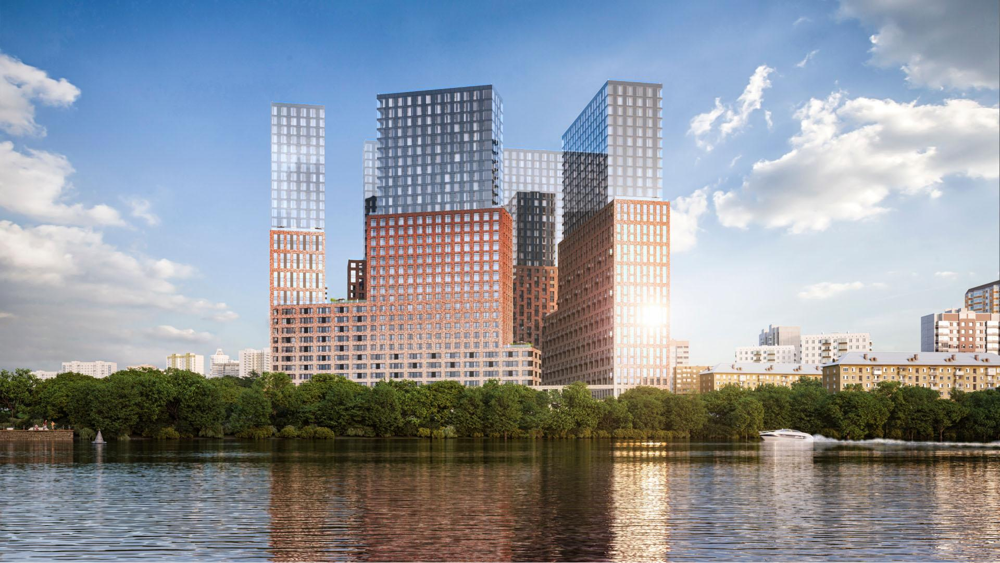
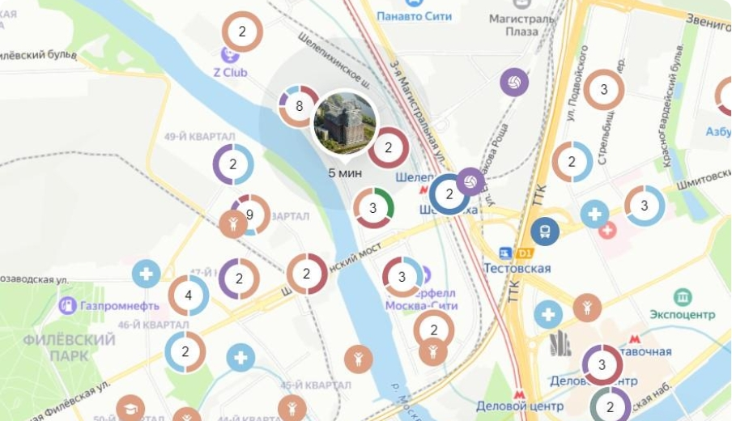

В отличие от обычных коворкингов, которые часто находятся в центре города или в деловых кварталах, лайфворкинг – это офис для жителей в многоквартирном доме. В мире анонсировано совсем немного аналогичных проектов. Застройщиком проекта выступает девелоперская компания Level Group, а проектировщиком – архитектурная группа «Остоженка».
Так, в одном из корпусов Level-Причальный будет расположен полноценный коворкинг площадью около 500 кв. метров. Так застройщики реагируют на запрос потребителей в более гибком режиме работы. Рабочие места смогут арендовать жители дома для себя или своих сотрудников.
Лайфворкинг предоставляет горожанам ряд преимуществ. Во-первых, это экономия времени на дорогу до места работы. По данным сервиса «Яндекс. Недвижимость», большинство москвичей тратят на дорогу до офиса в среднем полтора-два часа в день. Новый формат позволяет сократить это время до 10 минут.
Во-вторых, владельцы малого и среднего бизнеса смогут организовать гибкий офис для сотрудников в своем доме, поддерживая идеальный work-life баланс. Общее рабочее пространство развивает культуру добрососедства и открывает широкие возможности для нетворкинга. Кроме того, общение людей, работающих в абсолютно разных областях, позволяет расширить кругозор, найти новые идеи и необычные решения.
Удобное совмещение жилого и рабочего пространства – долгосрочный тренд, который будет стабильно усиливаться после периода самоизоляции и положительного опыта дистанционной работы.
Сейчас коворкинги в жилых проектах еще не стали распространенным явлением, хотя шаги в этом направлении делались и раньше. Согласно исследованию, которое провела компания Level Group, коворкинги реализованы в 23-х новостройках Москвы, причем 19 – это комплексы апартаментов.
Чаще всего коворкинги спроектированы в отдельно стоящих зданиях бизнес-центров на территории этих комплексов. В ряде проектов под рабочие места отданы площади в лобби, где могут размещаться от 10 до 20 столов. Однако это пространство не предназначено для постоянной восьмичасовой работы и тем более организации работы небольших фирм. Согласно результатам исследования Level Group, лайфворкингов, расположенных внутри многоквартирных домов, на московском рынке не представлено. Таким образом, лайфворкинг в проекте Level Причальный станет первым подобным объектом.
«Время диктует новые требования к организации комфортной среды для людей, поэтому просто необходимо внедрять новые форматы для жизни. Наша задача — на уровне инфраструктуры здания сформировать для людей такое пространство, где они смогут
получить максимум возможностей для самореализации. Работать в современном удобном вдохновляющем коворкинге, а освободившееся от дороги в офис время использовать для развития, спорта или хобби. Тем более рядом будет реализован один из самых эффектных проектов благоустройства набережной. В дальнейшем мы планируем делать полноценное рабочее пространство во всех наших проектах», – рассказал генеральный директор Level Group Кирилл Игнахин.
Level Причальный выбран в компании для внедрения экспериментального формата еще и потому, что расположен на первой линии Москвы-реки.
В ближайшем будущем Шелепихинская набережная будет реконструирована, здесь появится террасный парк, велодорожки, спортивная и детская инфраструктура: то есть все необходимое для полноценного и насыщенного отдыха. Таким образом, в пятиминутной доступности у жителей окажется не только пространство для работы, но и все условия для качественного ежедневного восстановления сил.
Недавно компания Level Group утвердила концепцию и начала проектирование проекта Level Причальный на участке 2,6 га в Причальном проезде на берегу Москвы-реки (5 минут от «Москва-Сити»).
Новый жилой комплекс будет состоять из четырех корпусов высотой в 32-33 этажа (плюс три подземных уровня). В ЖК будет более 1000 квартир.
Эти квартиры - квартиры бизнес класса, поэтому стоимость начинается от от 13.0 млн руб.
от 13 млн.
Эркерные окна станут уникальным дополнением фасада <будущего проекта и, кроме того, позволят вам увеличить полезную площадь будущей квартиры или поэкспериментировать с ее интерьером.
Заказатьот 16 млн.
На втором этаже корпусов «Юг» и «Запад» спроектированы квартиры с увеличенной высотой потолков. Это даёт возможность экспериментировать и воплощать в жизнь самые смелые интерьерные решения. Такую высоту можно использовать и рационально: установить полки для книг или шкафчики для хранения вещей.
Адрес: Причальный пр., д. 8
Транспортная доступность
Многообразие парков
Развлечения на любой вкус
Образовательная среда
Пешком, на метро, машине или автобусе, даже по воде – как бы вы не передвигались, все маршруты из Level Причальный будут быстрыми и максимально удобными. От жилого комплекса до станции метро «Шелепиха» – всего 7 минут пешком. За 13 минут на авто вы доберетесь до Садового кольца, за 15 – до МКАД и всего за 10 – до Москва-Сити!
